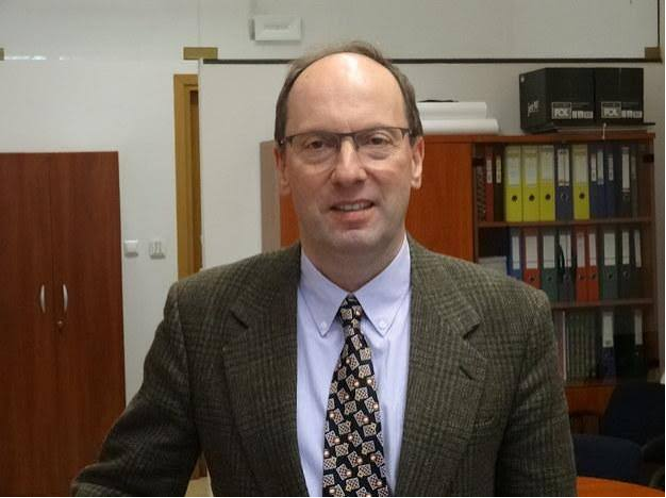
Mirosław J. Skibniewski
Professor
Department of Civil and Environmental Engineering · Maryland Robotics Center · University of Maryland
This workshop will bring together leading scholars and practitioners to discuss how robotics and autonomous equipment can support future construction sites. With wider adoption across construction sites, the practical value of these technologies depends on how safely and effectively they work with people in changing site conditions. The workshop will therefore focus on human robot interaction, together with sensing, planning, control, worker acceptance, and the management of mixed human machine teams.
This one-day, in-person programme will invite speakers from overseas, Mainland China, and Hong Kong. It will connect fundamental research with construction-site needs through keynote and technical presentations, discussion sessions, student poster presentations during coffee breaks, and informal exchanges between students and invited speakers. Through these activities, the workshop will create opportunities for academic exchange and future collaboration among researchers, practitioners, and students.
Speakers

Professor
Department of Civil and Environmental Engineering · Maryland Robotics Center · University of Maryland
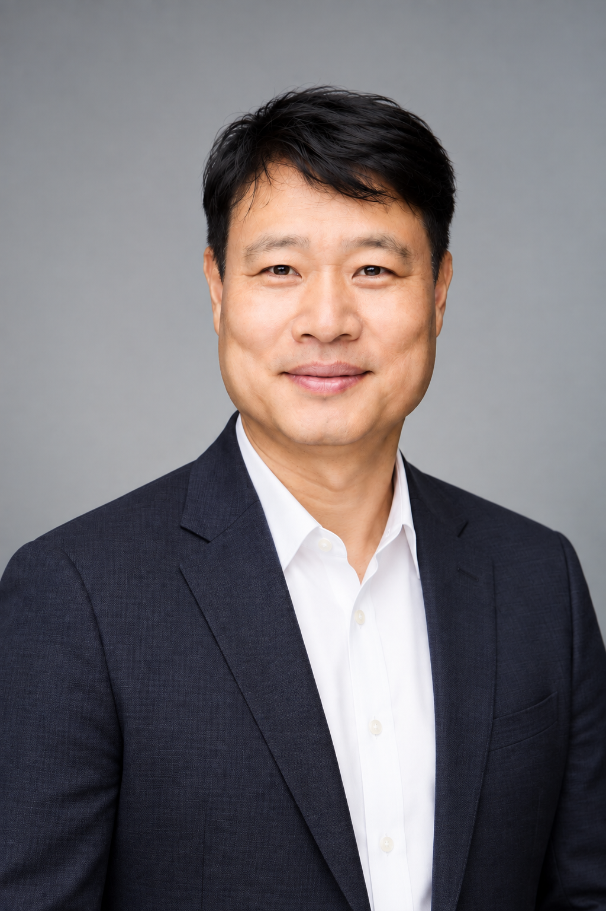
Professor
School of Civil and Environmental Engineering · Georgia Institute of Technology
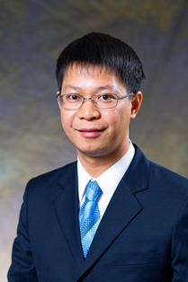
Professor
Department of Architecture and Civil Engineering · City University of Hong Kong
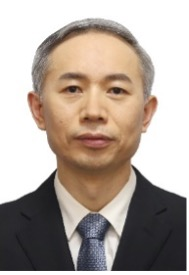
Head and Associate Professor
Department of Construction Management · Tsinghua University
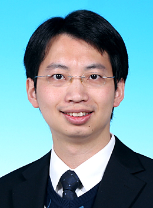
Associate Head and Professor
Department of Civil and Environmental Engineering · The Hong Kong University of Science and Technology
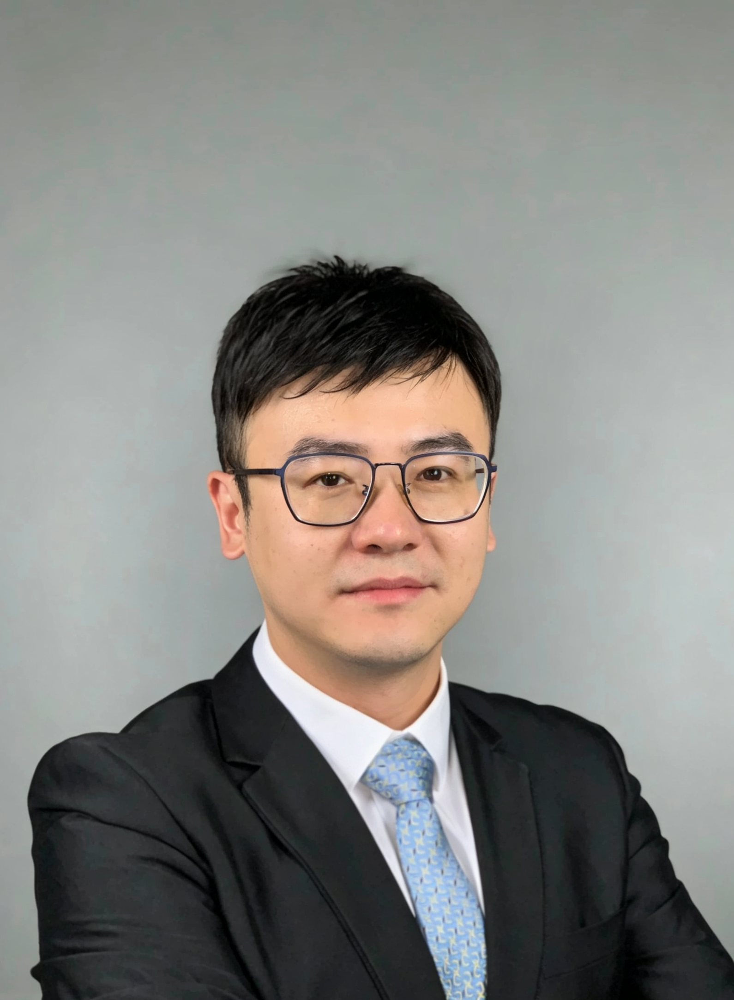
Associate Professor
Department of Industrial and Systems Engineering · The Hong Kong Polytechnic University
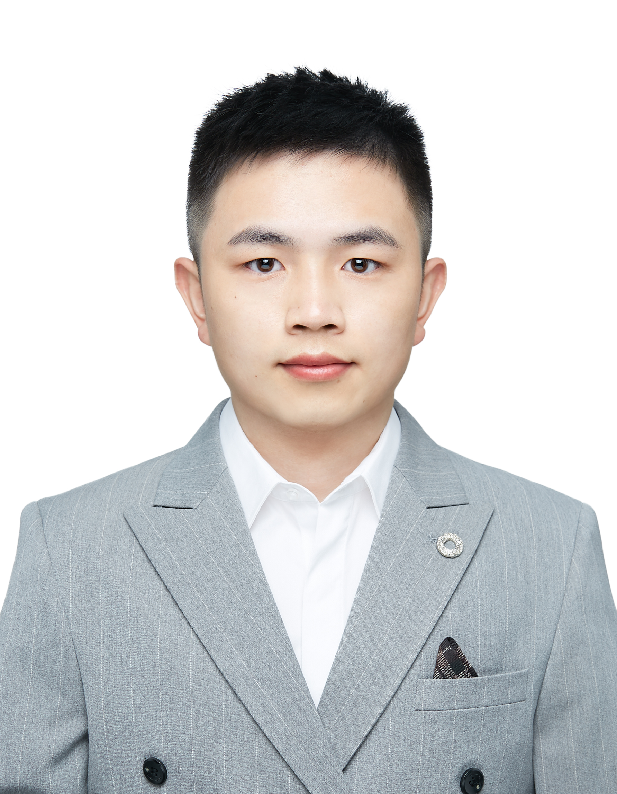
Assistant Professor
Division of Integrative Systems and Design · The Hong Kong University of Science and Technology
Assistant Professor
Internet of Things Thrust and Artificial Intelligence Thrust · The Hong Kong University of Science and Technology (Guangzhou)
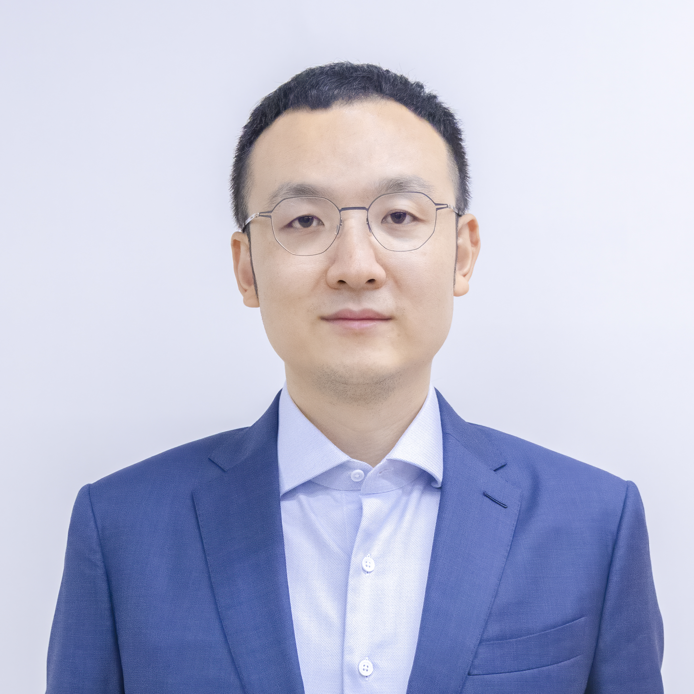
Associate Director
Hong Kong Center for Construction Robotics
Agenda
Each invited talk is scheduled for 20 minutes plus 5 minutes of Q&A. Times remain tentative and may be adjusted once travel and talk details are confirmed.
Poster Session
The seminar includes poster moments during lunch and coffee breaks for early-stage ideas, ongoing work and collaboration discussion.
We invite up to 10 posters related to construction robotics, automation, digital twins, embodied AI, human–robot collaboration and adjacent topics.
Submission Deadline: .
Please indicate your intention to present a poster on the registration page. Poster submission instructions will be announced with the final agenda.
Venue
Please check current routes and service information before travelling.
Hang Hau: take green minibus 11M from Exit B1 to the HKUST main entrance.
Choi Hung: take bus 91 or 91M from Exit C2, or green minibus 11 from Exit C1, to the HKUST main entrance.
Official HKUST transport guide ↗A taxi from Hong Kong International Airport can take you directly to the HKUST Clear Water Bay campus.
Alternatively, take the Airport Express to Kowloon Station and continue by taxi, or use MTR Connections and transfer at Hang Hau to green minibus 11M.
Airport Express information ↗From The Royal Garden Kowloon East, walk to Tseung Kwan O Station Bus Terminus and take Citybus 792M towards Sai Kung. Alight at the HKUST stop for the main entrance.
Alternatively, take a taxi, or take the MTR to Hang Hau (one stop) and transfer to green minibus 11M at Exit B1. Check current routes before travelling.
Campus and arrival information ↗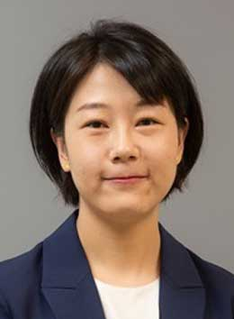
Chair
The Hong Kong University of Science and Technology
View Profile ↗Co-Chair
The Hong Kong University of Science and Technology (Guangzhou)
View Profile ↗Co-Chair
The Hong Kong University of Science and Technology
View Profile ↗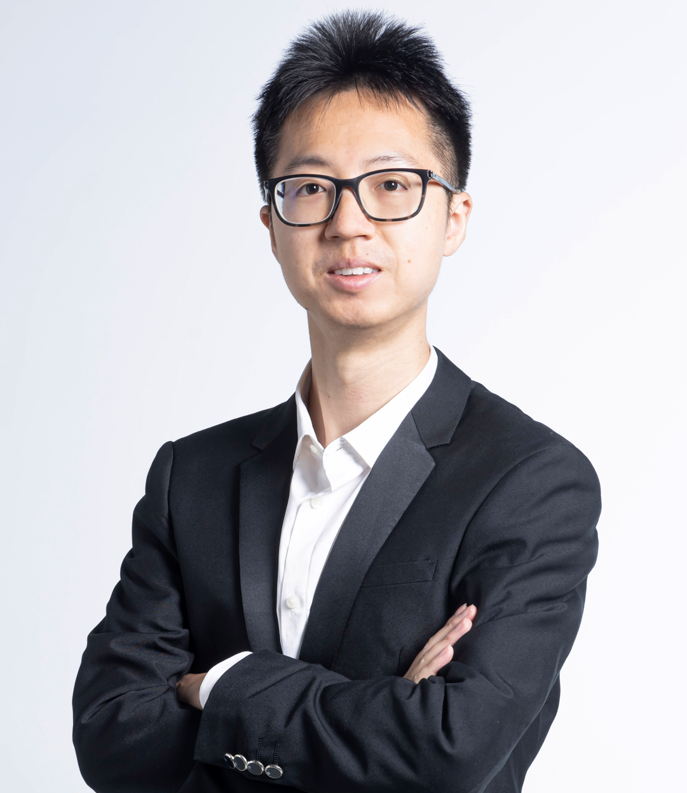
Co-Chair
The Hong Kong University of Science and Technology
View Profile ↗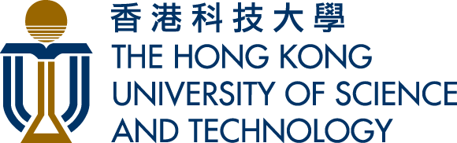
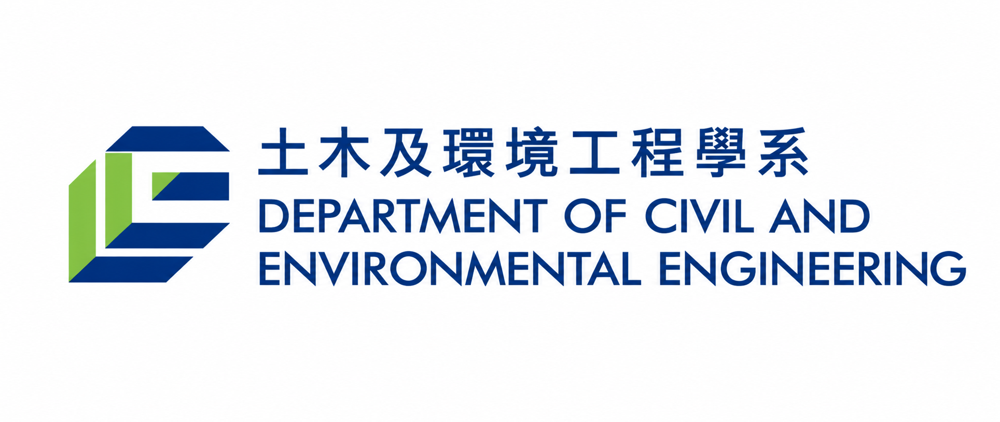
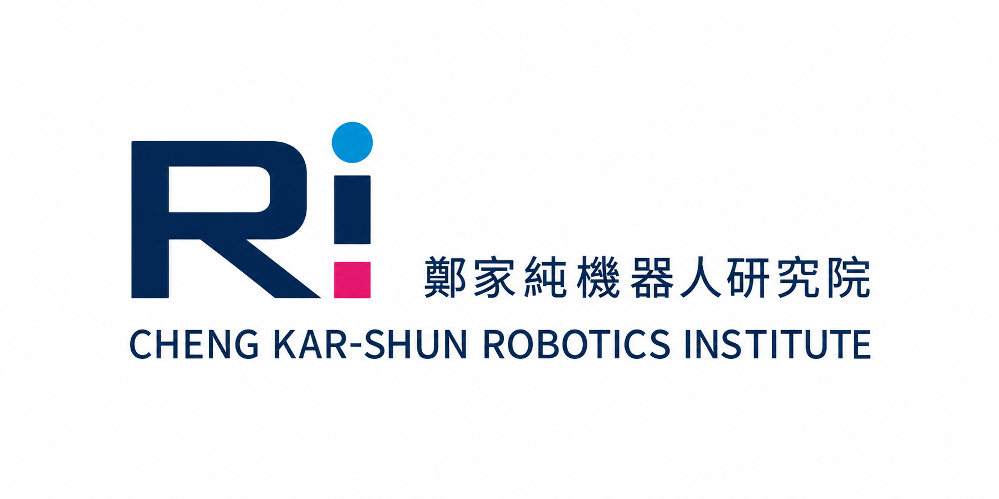
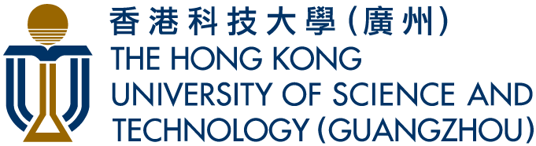
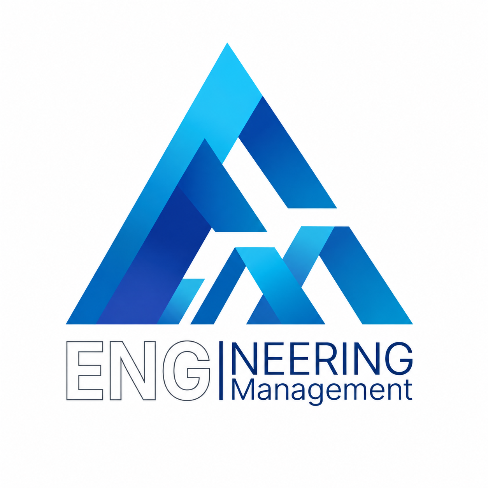